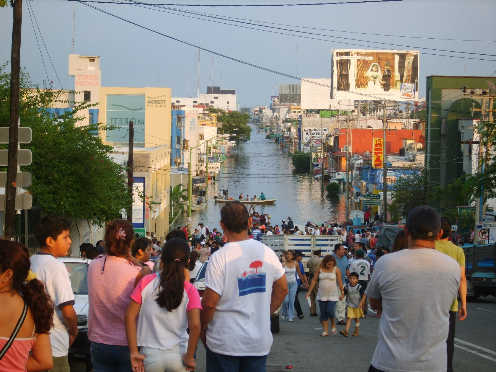
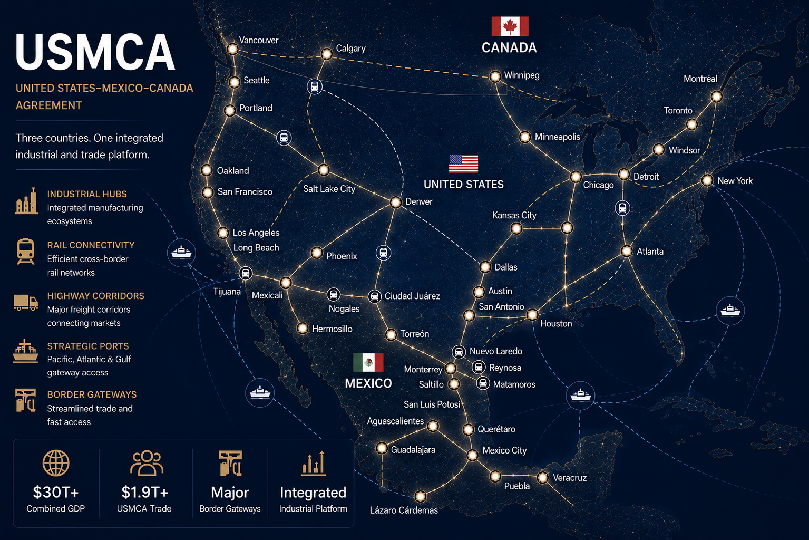
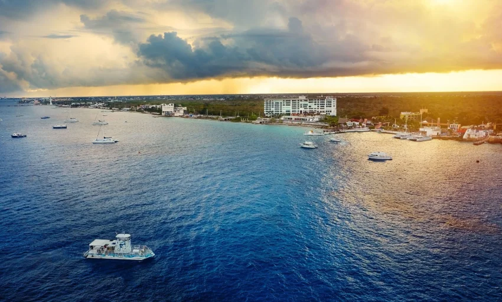
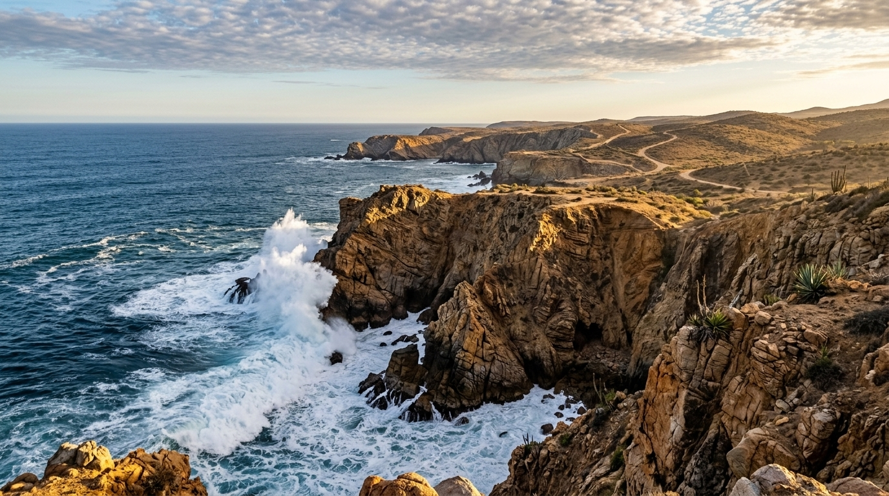
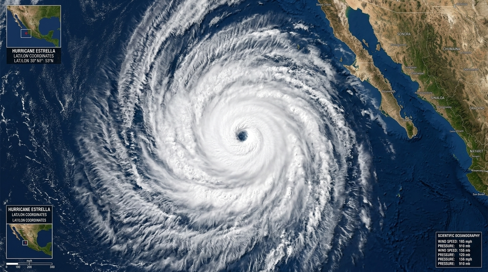

Surrounded by the Pacific Ocean, the Gulf of Mexico, and the Caribbean Sea, Mexico's geographic positioning subjects it to powerful oceanic currents, intense fluvial networks, and volatile weather patterns (National Oceanic and Atmospheric Administration [NOAA], 2023). These water systems dictate the nation's climate, dictate its trade logistics, and periodically test its resilience against natural disasters.
Video: An immersive exploration of Mexico's Baja California peninsula, examining how the cold Pacific currents and the warm Sea of Cortez create one of the most biodiverse marine environments on Earth (VoyagersTV, 2026)

Frequency and Locations: Flooding is an annual, high-risk issue in Mexico, heavily concentrated in the low-lying southeastern state of Tabasco and the subsided basin of Mexico City (World Bank, 2021). During the rainy season (June to November), heavy rains cause the Grijalva and Usumacinta rivers to overflow their banks, inundating agriculture and cities.
Government Action: To mitigate these disasters, the National Water Commission (CONAGUA) monitors river levels and operates a network of hydroelectric dams, such as the Peñitas Dam, to control water flow (CONAGUA, 2022). Additionally, the government invests in dredging riverbeds and maintaining the deep drainage system (Emisor Central) in Mexico City to prevent urban flooding.

Major Routes & Geological Impact: Due to Mexico's rugged, mountainous topography (Sierra Madre ranges), river trade is virtually nonexistent for heavy freight. Consequently, trade is heavily reliant on overland truck and rail routes. The primary trade artery is the Pan-American Highway (Highway 85) and the NAFTA/USMCA corridor linking Central Mexico to Texas (Secretaría de Economía, 2023).
Trading Partners: The United States is Mexico's dominant trading partner, accounting for roughly 78% of all exports and 44% of imports (OEC, 2023). China is the second-largest partner for imports, primarily supplying electronics and manufacturing components.

Ocean Currents: Mexico's climate is profoundly shaped by the cold California Current on the Pacific coast, which creates the arid conditions of Baja California, and the warm Gulf Stream in the east, which brings moisture and tropical humidity to the Gulf Coast (NOAA, 2023).
Proximity & Shipping: Because it is not landlocked, Mexico operates massive deep-water ports. Manzanillo (Pacific) handles Asian trade, while Veracruz (Gulf) connects to European and Atlantic markets (Secretaría de Marina, 2022).
Islands: Mexico possesses numerous islands, most notably Cozumel and Isla Mujeres in the Caribbean. These islands are critical to the economy, driving billions of dollars in eco-tourism, cruise ship revenue, and cultural preservation centered around the Mesoamerican Barrier Reef (INEGI, 2022).

Mexico boasts over 9,300 kilometers of coastline, divided sharply into two distinct geological profiles (Lugo-Hubp, 2011).

Hurricanes: Mexico's ocean proximity makes it a frequent target for intense tropical cyclones from both the Pacific and the Atlantic. In October 2023, Hurricane Otis rapidly intensified into a Category 5 storm, making a devastating direct hit on Acapulco, causing catastrophic infrastructure damage (NOAA, 2023). Historically, Hurricane Wilma (2005) caused widespread destruction in the Yucatán Peninsula.
Tsunamis: Due to its location on the volatile Pacific Ring of Fire, the west coast is at risk of tsunamis triggered by subduction zone earthquakes. Following the massive 1985 Michoacán earthquake and the 2017 Chiapas earthquake, localized tsunamis up to 3 meters were recorded, prompting the government to install advanced tidal gauge warning systems along the Pacific coast (CENAPRED, 2021).